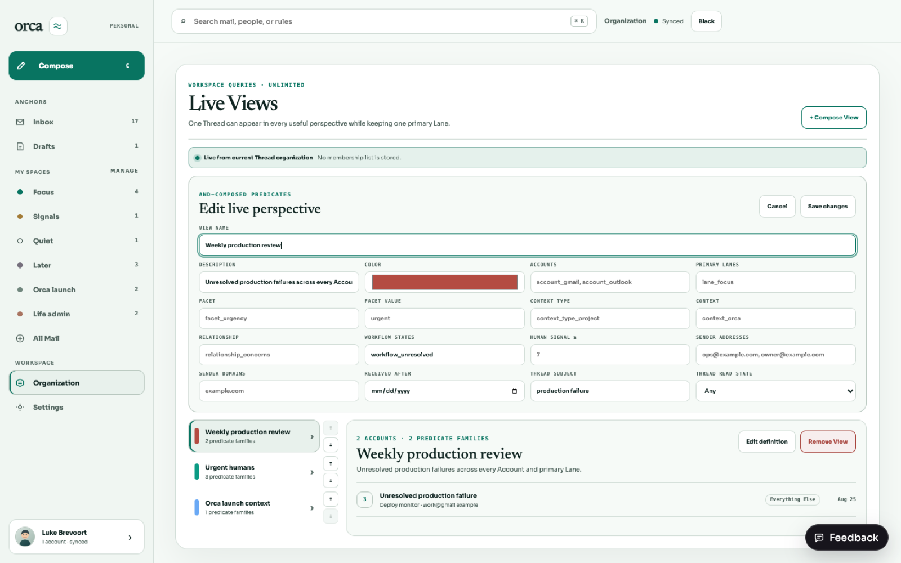
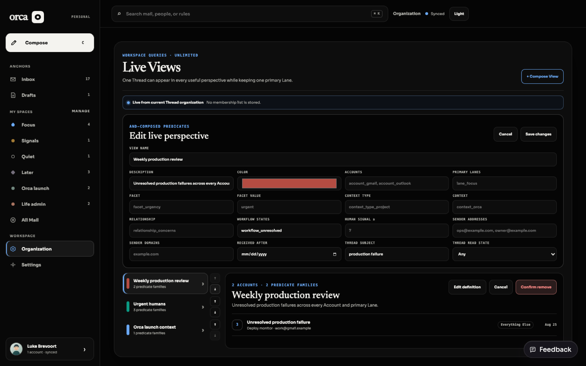

Create, select, definition edit, atomic reorder, and remove all retain stable IDs and require the current View revision.
The slice at a glance
There is intentionally no View membership table. The same Thread can match any number of Views while its Lane row remains singular.
SQL is capped at 100 results and scans an expression index whose COALESCE timestamp, Account, and Thread order exactly matches seek and ORDER BY semantics.
Account, Lane, Facet, Context Type, Context, Relationship, Workflow State, and Thread IDs fail closed before any definition write.
Live evaluation path
Definition
→One typed AND-composed JSON query lives in organization_views.
Current state
→Indexed joins and EXISTS clauses inspect Threads and all Organization dimensions.
Stable page
Latest received DESC, Account ID, Thread ID; the cursor binds View revision and Account scope.
Runtime evidence


Acceptance map
| Criterion | Evidence | Status |
|---|---|---|
| Complete lifecycle | Interaction and route tests cover create/select preservation, definition edit, atomic two-View reorder, explicit removal confirmation, stale revisions, authority denial, and zero mutation. | PASS |
| All predicates | Shared schema + composer + route test exercise Account, Lane, Facet, Context, Workflow, Human Signal/reason, sender/domain, date, Thread; edit preserves predicate fields not directly shown. | PASS |
| Live results | Route test mutates a Facet after the first query; the Thread disappears without membership writes. | PASS |
| Unlimited + one Lane | 109 definitions list successfully; one Thread matches two Views; schema contains one Lane placement and no View-membership table. | PASS |
| Accepted Organization page | Views live inside the existing one-sidebar Organization destination and reuse semantic desktop tokens. | PASS |
| Bounded/indexed | Limit ≤100; exact COALESCE timestamp DESC, Account ASC, Thread ASC expression index; representative EXPLAIN uses threads_view_order_idx with no temporary B-tree; ties and null timestamps paginate once. | PASS |
| Cursor boundary | Strict five-field decoding rejects wrong primitives, arrays, objects, nulls, fractional/bounded timestamps, fingerprint/version mismatch with stable HTTP 400 before SQL binding. | PASS |
| Workspace authority | Cross-Workspace Account, Lane, Facet, Context Type, Context, Relationship, Workflow State, and Thread definitions return 403 with zero create/update mutation. | PASS |
| Weekly production review | Fixture and route test show unresolved production failure from Everything else because the View has no Lane predicate. | PASS |
| Regression suite | 553 shared/API/web tests accounted for, including load-tolerant serial API and web runs, plus package typechecks, build, lint, and diff checks. | PASS |
Repeat the review
bun install --frozen-lockfile bun run typecheck bun --cwd packages/shared test bun --cwd apps/api test --timeout 20000 --max-concurrency 1 bun --cwd apps/web test --timeout 20000 bun run build bun run lint # visual demo bun run dev:web open 'http://localhost:5173/dev/inbox?destination=organization'
Theme gate: selected controls use surface-hover + strong border + ink; no inverse-color assumption. Default, hover, focus, selected, and disabled states were inspected in Light and Orca Black.